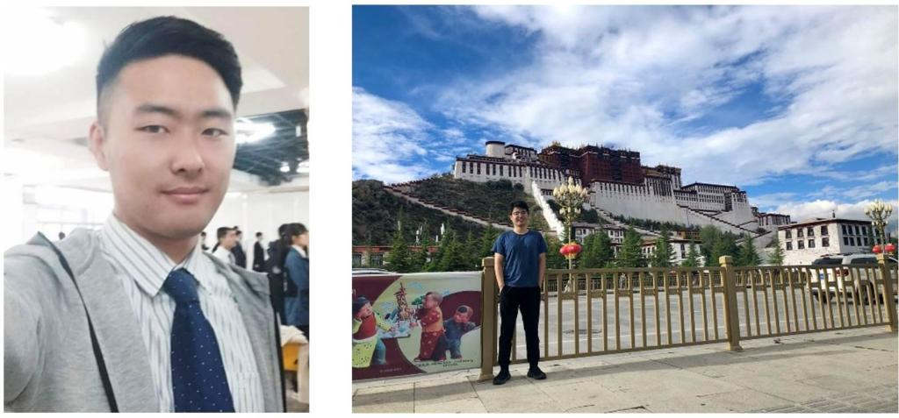

人工智能学院2020届学生俱乐部
一、学生俱乐部简介
人工智能学院学生俱乐部成立于二零零一年新春伊始，是在全学院研究生内部自发产生的、旨在为全体师生服务的学生组织。在导师的亲切关怀和全体学生的共同努力下，俱乐部的工作有条不紊的进行着，已经取得了一定的成绩。俱乐部下设学术部、宣传部、生活部、文体部及网络部，分管所内各项日常工作。俱乐部设主席一名、副主席三名，总领、协调各部门工作；每个部门设部长一名、副部长六或七名。俱乐部主席及各部部长每年选举一次，选举时间定为每学年上学期末。
二、主要工作
俱乐部主要参与组织的活动有：年终总结会、春游之骑行、人机所之夏、篮球赛、兵乓球赛、各类学术报告、元旦晚会。
俱乐部的各个部门分工有序，高效的为师生服务。学术部的宗旨是营造学术氛围，活跃学术思想；促进学术交流，提高学术水平。每周组织的“周末研讨会”活动在所内创造了良好的学术交流气氛，在全校范围内也产生了一定影响；宣传部向外界宣传介绍我所务实创新的求学精神，展现我所师生刻苦钻研、健康向上的形象，为我所师生查阅资料、交流学术、分享心得提供轻松便利的空间，并且配合学生俱乐部其他各部门的活动进行宣传工作。网络部组织了人机所主页改版工作，国际会议的网页制作，开辟了对外宣传的新窗口；生活部解决了早餐、饮用水等问题，为同学们办了许多实事，使我们的集体生活温暖、和谐；文体部成功地组织若干次大型活动，并定期组织大家参加体育锻炼，为同学们日常的学习生活增添了许多乐趣。
三、人工智能学院2020年学生俱乐部成员

主席：左炜亮
副主席：彭茹 副主席：张永驰 副主席：井皓东
学术部部长：王磊
副部长：冯聪 副部长：谢宇清 副部长：颜庆嵩
副部长：屈鹏飞 副部长：王圣琦 副部长：周恒毅
文体部部长：简志强
副部长：杨卓 副部长：高岩 副部长：高凤

副部长：屈渝立 副部长：沈艳晴 副部长：王浩宇
宣传部部长：杨奔
副部长：林泽旸 副部长：徐霁琛 副部长：卢美祺
副部长：董一铭 副部长：肖同 副部长：张书培
生活部部长：王玉学
副部长：张志浩 副部长：赵泽林 副部长：丁健
副部长：李嘉鹏 副部长：王梓杰 副部长：危文文

网络部部长：唐浩雯
副部长：李环 副部长：宋洁 副部长：孙世光

副部长：黄榕耀 副部长：康永
副部长：刘玉飞 副部长：周婉琪
近几年来，人工智能学院每年举办一次“人机所之夏”学术讨论会，以学术报告和自由讨论相结合的形式，旨在交流研究成果，活跃学术气氛。学术报告涉及网格技术、图像处理、视频处理、计算机视觉与模式识别以及视频专用芯片设计等多个研究领域，从软件到硬件，从算法研究到硬件实现，每个汇报都是自己的亲身体会，让我们感受到人机所勤奋踏实、积极创新的研究氛围和敢为人先的优良传统。正是这种精神和干劲使我们不断取得骄人的研究成果。
人工智能学院年终总结会是我所年终举行的总结报告会，旨在总结年度工作，表彰鼓励先进，展望计划未来，交流研究成果、活跃学术气氛。总结会分大会报告，课题总结，个人总结和硕士开题报告等，力求全面总结过去，认真计划未来。